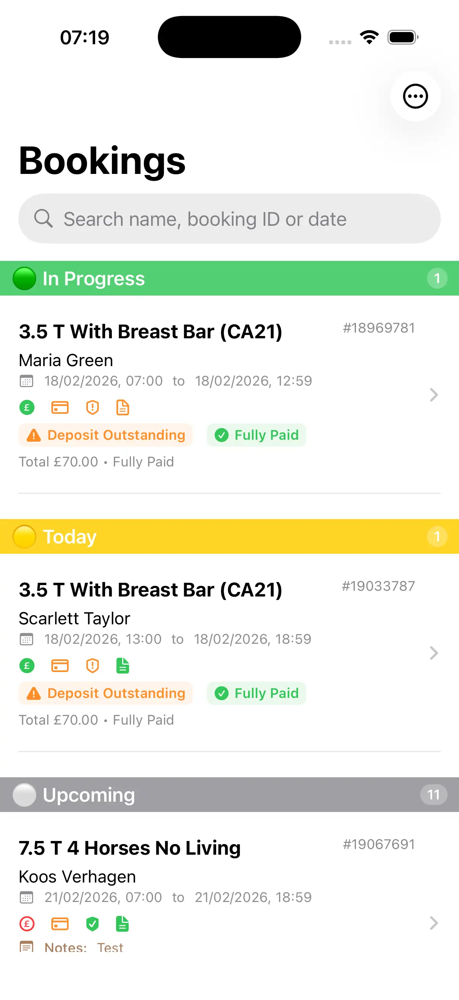
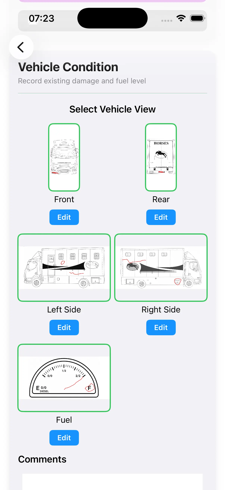
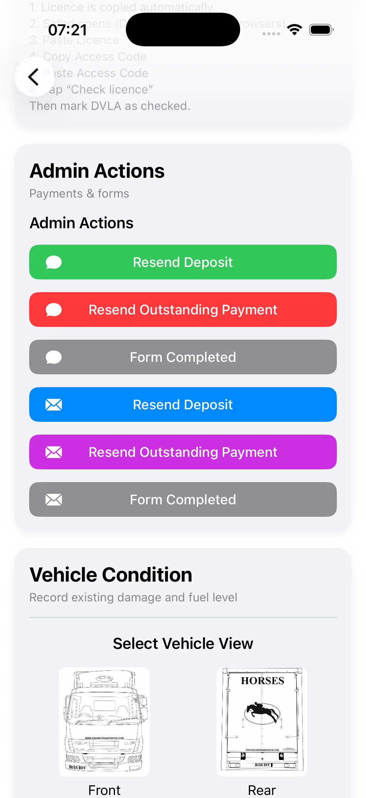
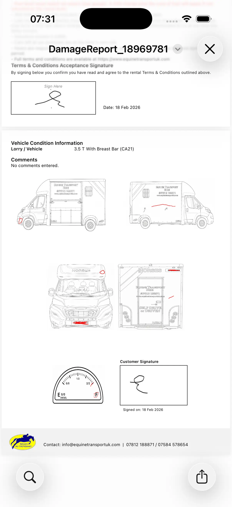

HireCheck App
iOS app built in SwiftUI for digital damage reports, signatures, and automated multi-page PDF generation — designed for real hire workflows.
Demo Video

Short walkthrough of the app flow: booking → checks → signatures → PDF output.
What it does
- Capture damage diagrams and notes on-device
- Collect multiple signatures (customer + terms)
- Generate and mails professional PDF reports automatically
- Supports hire workflow: pickup + return checks
Tech stack
- SwiftUI
- PencilKit (drawing + signature capture)
- PDFKit (PDF creation + layout)
- Backend integration for data + email sending
App Screenshots
Real interface examples from the live HireCheck workflow.



